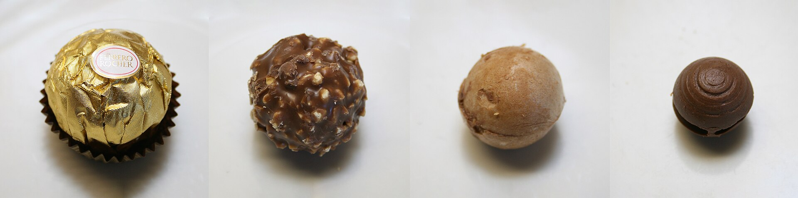

Layers
History
Ferrero Rocher was introduced in 1979 in Italy and in other parts of Europe in 1982. Shortly after its release, production was halted due to a problem with label printing.[3] Michele Ferrero, the credited inventor, named the chocolate after a grotto in the Roman Catholic shrine of Lourdes, Rocher de Massabielle [fr].[4] Rocher comes from French and means rock or boulder.[5]
Ingredients
Ingredients The chocolate consists of a whole roasted hazelnut encased in a thin wafer shell filled with hazelnut chocolate and covered in milk chocolate and chopped hazelnuts.[6] Its ingredients are milk chocolate, sugar, cocoa butter, cocoa mass, skim milk powder, butteroil, lecithin as emulsifier (soy), vanillin (artificial flavor), hazelnuts, palm oil, wheat flour, whey (milk), low fat cocoa powder, sodium bicarbonate (leavening agent), and salt.[7]
Production
The production process is secretive, with no smartphones or notebooks allowed inside the production facilities. As of 2015, few journalists have ever been invited to visit.[8] As of 2015, the production in the Alba factory totals 24 million Ferrero Rochers a day.[8] The sweet is produced by machinery. The process begins with flat sheets of wafer with hemispheres moving down an assembly line.[9] The hemispheres of the wafers are then filled with a chocolate hazelnut cream and part of a hazelnut. Next, two of these wafer sheets, one with a hazelnut and one with hazelnut chocolate cream, are clamped together. The excess wafer is cut away producing wafer balls. These balls are then coated with a layer of chocolate, a layer of chopped hazelnuts, and a final layer of milk chocolate[9] before the chocolate ball is wrapped in its prominent gold foil.[3]
Distribution
Distribution Roughly 3.6 billion Ferrero Rochers are sold each year in over 42 countries.[10][unreliable source?] These include 28 countries in Europe including the UK, eight countries in Asia, five countries in Africa including South Africa, nine countries in the Americas, and two countries in Oceania.[11]